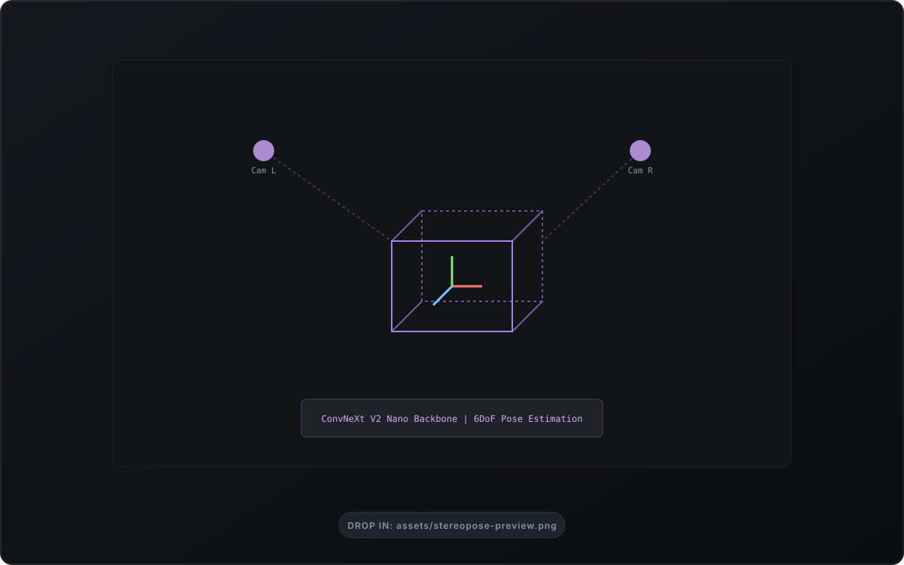
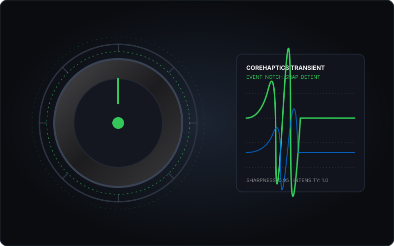

Selected Technical Work
StereoPose 6D — Continuous 6DoF Pose Estimation
Research thesis investigating 6DoF spatial object pose estimation from stereo camera pairs without LiDAR dependency. Replaced discontinuous Euler angles and antipodal quaternion ambiguities with continuous 6D rotation formulation, projecting unconstrained vectors onto the SO(3) manifold via Gram-Schmidt orthogonalization. Benchmarked ConvNeXt V2 Nano topologies across early vs. late stereo fusion under severe metric occlusion.


BetterGitGraph — Interactive Git DAG for VS Code
A developer tooling extension rethinking Git history visualization around human spatial cognition. Renders commit graphs as true topological Directed Acyclic Graphs (DAGs) with persistent, hash-deterministic branch coloring and smooth Bézier curve layout algorithms. Incorporates a two-stage safety state machine that intercepts destructive actions (rebase, reset, cherry-pick) and translates them into plain-English terminal execution previews before running.
AI-TL — Manga & Manhwa Localization Pipeline
End-to-end multimodal translation pipeline engineered for dense vertical webcomics and manga. Coordinates text bubble detection, non-destructive background inpainting, and cross-panel LLM dialogue disambiguation—preserving character voice, speaker gender, and narrative continuity across multi-scene contexts with automated dynamic typography fitting.


Hapticle — Physics-Driven Tactile Sensory Playground
Tactile feedback engine synchronizing physical force simulations with native Apple hardware. Formulates rotary friction, spring detents, and Coulomb's Law directly in Swift state machines running on a 120Hz CADisplayLink loop—eliminating 3D game engine overhead and thermal throttling. Coordinates the Sensory Trinity: aligning sub-millisecond CoreHaptics transients, synchronized AVAudioEngine acoustic synthesis, and responsive neumorphic UI states.
Reefora — 2.5D Marine Restoration Sandbox
An interactive 2.5D tactile marine restoration sandbox built for post-workshop alumni engagement with Living Seas Bali. Backed by EcoEngine—a decoupled, pure Swift domain package executing Shannon biodiversity indexes, algae overgrowth dynamics, and trophic herbivore recruitment curves. Governed by 38 immutable Architecture Decision Registers (ADRs) and architected with zero-leak Swift 6 complete concurrency, verified by an independent 36-test headless SPM sidecar suite.